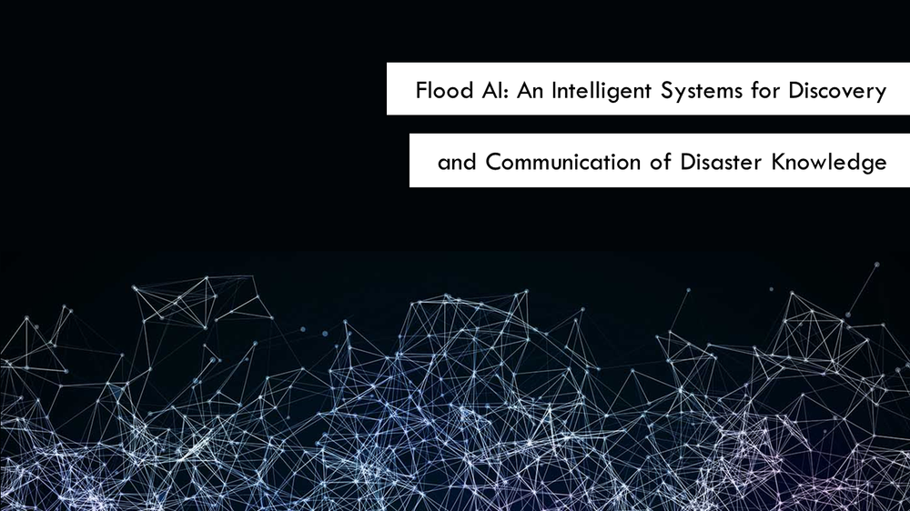
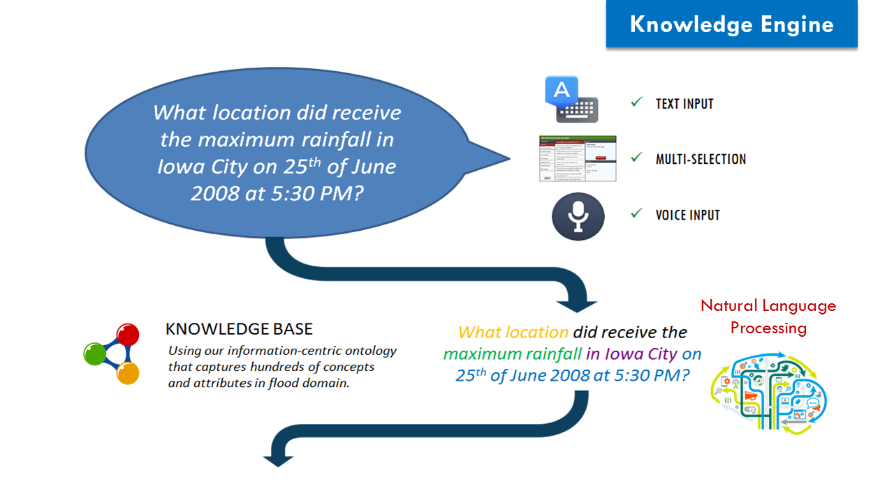
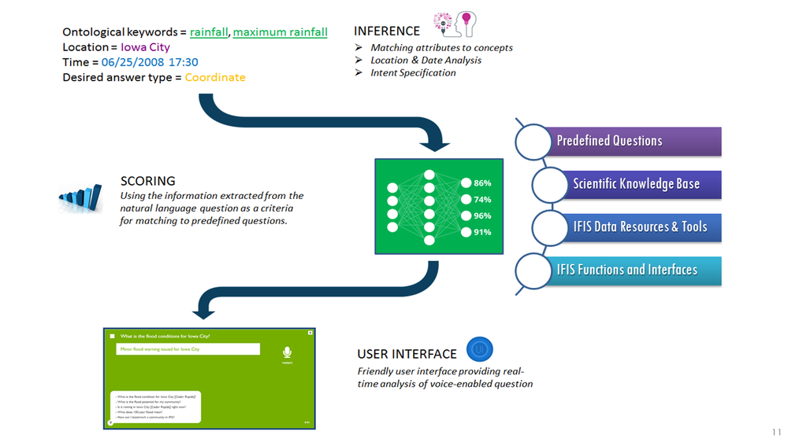
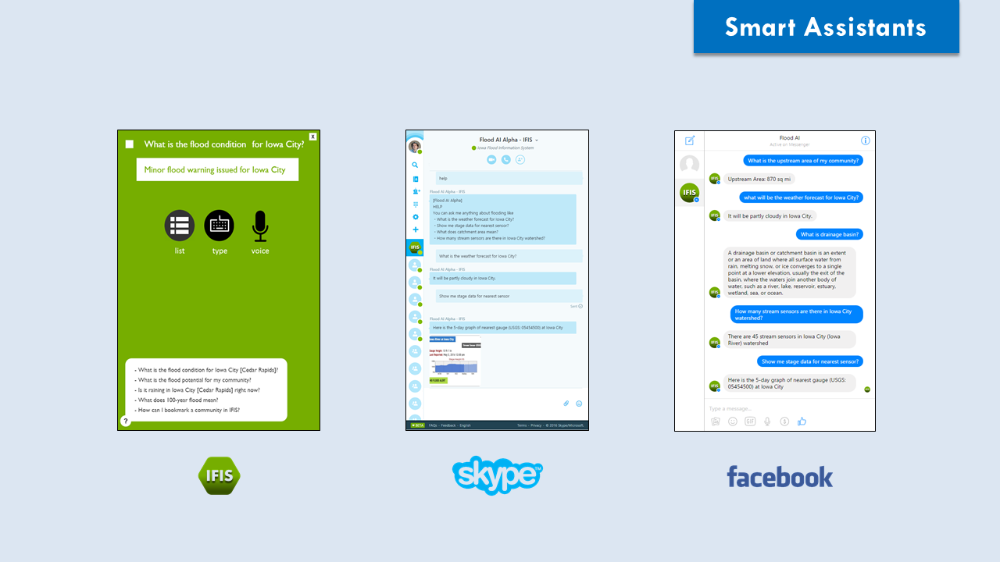
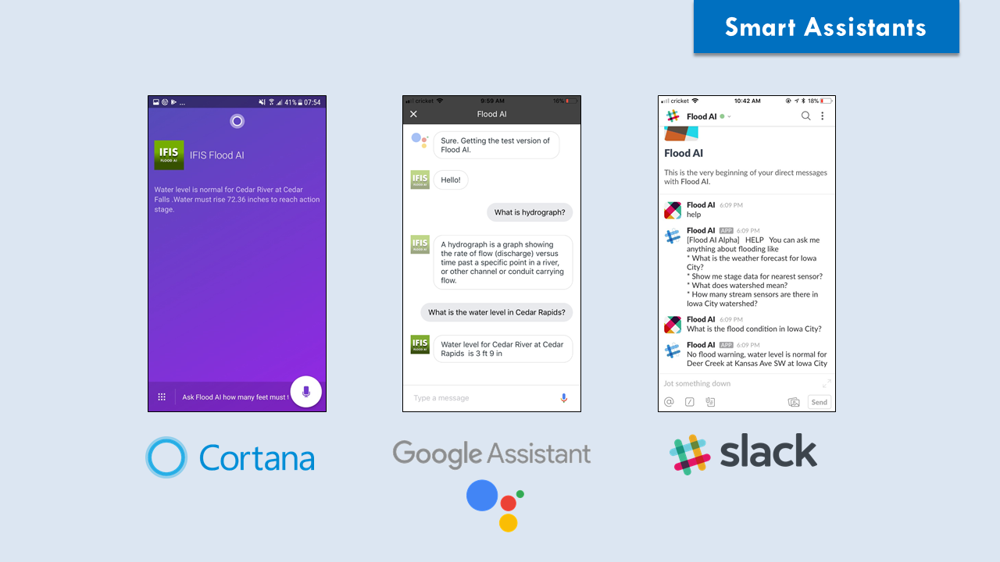
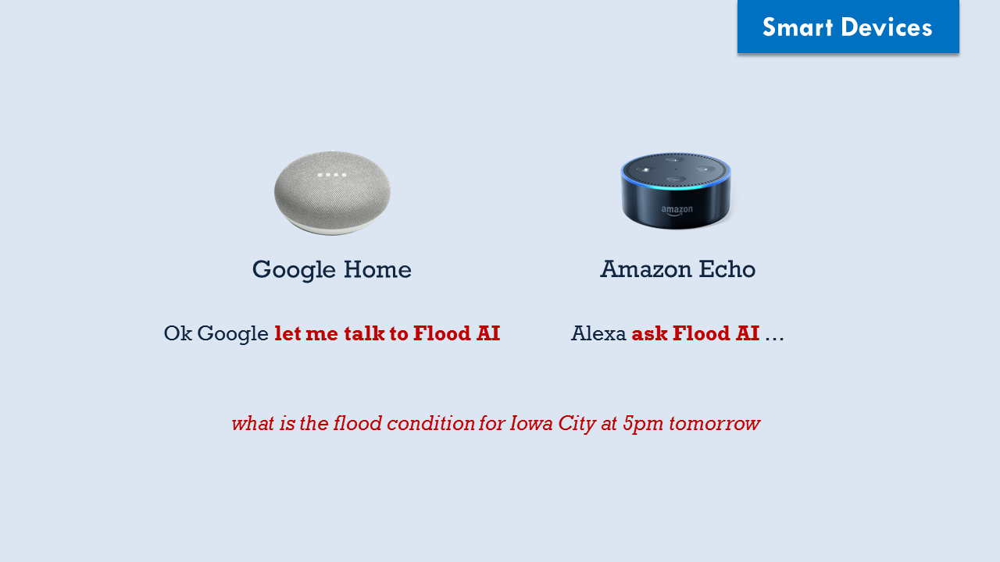
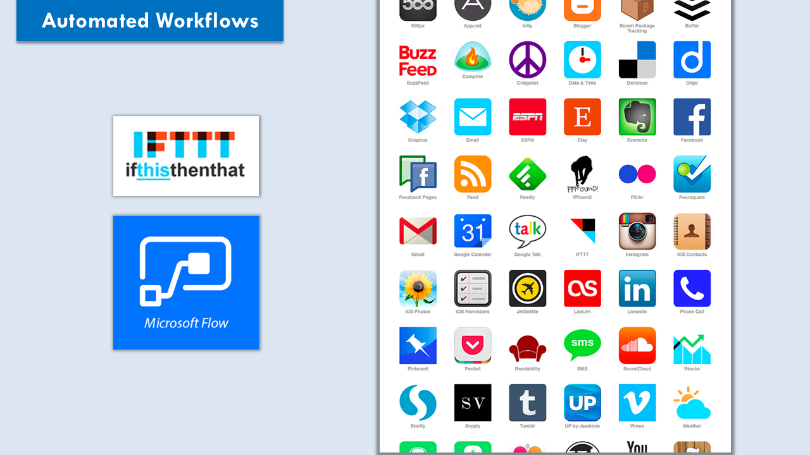
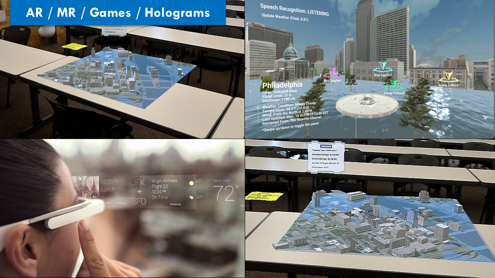

The Flood AI is an intelligent system for knowledge generation and communication on flood related data and information. The Flood AI utilizes disaster ontologies, natural language processing, artificial intelligence methods, and voice recognition to generate knowledge. The data and modeling results on flood-related issues are organized to provide definitive answers to factual inquiries. The knowledge engine utilizes the flood ontology and concepts to connect user input to relevant knowledge discovery outputs on flooding, and includes a data acquisition and processing framework for existing environmental observations, forecast models, and social network data streams.
A communication framework is developed to support user interaction and delivery of information to users. The interaction and delivery channels includes voice and text input via web-based systems, agent-based chat bots (e.g. Microsoft Skype, Facebook Messenger), smartphone and augmented reality applications (e.g. smart assistant), and automated web workflows (e.g. IFTTT, MS Flow), and smart home devices (e.g. Google Home, Amazon Echo) to open the knowledge discovery for flooding to thousands of use cases and applications.
Project Website: https://ifis.iowafloodcenter.orgRelated Articles
- Sermet, Y. and Demir, I., 2019. A Generalized Web Component for Domain-Independent Smart Assistants. arXiv preprint arXiv:1909.02507. (arXiv: https://arxiv.org/abs/1909.02507)
- Sermet, Y. and Demir, I., 2019. Towards an information centric flood ontology for information management and communication. Earth Science Informatics, 12(4), pp.541-551. (DOI: https://doi.org/10.1007/s12145-019-00398-9)
- Sermet, Y. and Demir, I., 2018. An intelligent system on knowledge generation and communication about flooding. Environmental modelling & software, 108, pp.51-60. (DOI: https://doi.org/10.1016/j.envsoft.2018.06.003)
Related Links







